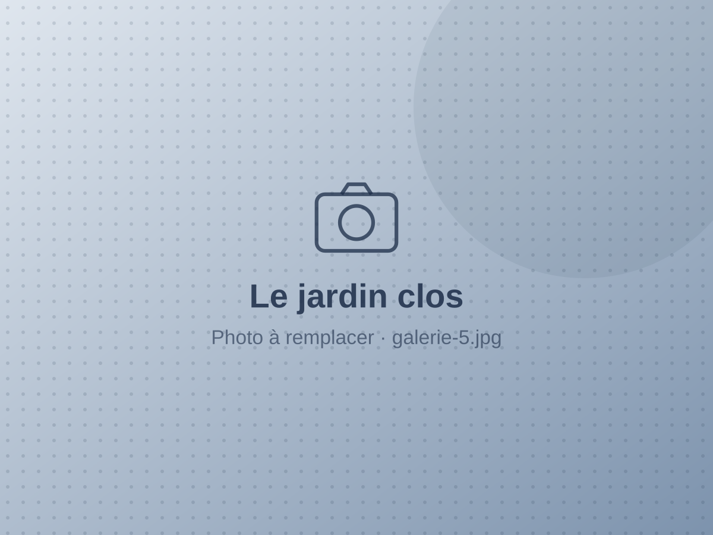

Gîtes de France 3 épis · noté 5/5
Une maison de charme au calme de la campagne picarde
Claudine et Claude vous accueillent à Belleuse, dans une maison spacieuse et douillette, à deux pas de la Coulée verte et à 5 km de Conty.
- 5voyageurs
- 2chambres
- 120 m²maison indépendante
- 700 m²jardin clos
Le gîte
Tout le confort d'une maison, le jardin en plus
Une maison indépendante, propre et parfaitement équipée, où l'on pose ses valises comme chez soi. Les lits sont faits à votre arrivée, le chauffage et l'eau sont compris.
À l'intérieur
Cuisine aménagée ouverte (réfrigérateur-congélateur, micro-ondes, lave-vaisselle, cafetières filtre et à dosettes), séjour lumineux et deux chambres confortables.
- Wifi
- Télévision
- Lave-linge
- Sèche-linge
- Lave-vaisselle
- Équipement bébé
À l'extérieur
Un grand jardin clos de 700 m², idéal pour les enfants, avec terrasse, salon de jardin et barbecue pour les soirées d'été.
- Jardin clos
- Terrasse
- Barbecue
- Salon de jardin
Autour du gîte
- Équitation, pêche, Conty 5 km
- Forêt 10 km
- Piscine 15 km
- Amiens, cathédrale et hortillonnages ≈ 30 min
- Baie de Somme et plages ≈ 1 h
Vos hôtes
Un accueil comme à la maison
Agréé Gîtes de France depuis 2015, le Gracieux Cottage est tenu par Claudine et Claude, amoureux de leur village et de la Picardie. Sentiers de randonnée, étangs, Coulée verte le long de l'ancienne voie ferrée : ils partagent volontiers leurs bonnes adresses.
Leur conseil pour une belle journée à Amiens : le quartier Saint-Leu, la cathédrale Notre-Dame et une balade dans les hortillonnages, pourquoi pas les trois à la suite.
Claudine & Claude
Galerie
Visite en images

Avis des voyageurs
5/5, et l'envie de revenir
★★★★★
Nous nous sommes sentis très à l'aise dans cette maison si propre et il ne nous a manqué de rien.
★★★★★
L'hébergement est bien équipé et très agréable. Le propriétaire a été de bon conseil sur les visites.
★★★★★
La maison est charmante et typique. Nous y reviendrons avec grand plaisir.
Contact
Préparons votre séjour
Réservez directement sur Gîtes de France, ou écrivez à Claude pour toute question : dates, arrivée, conseils de visites.
- Réservation en ligne
Voir les disponibilités sur Gîtes de France
Infos pratiques
| Capacité | 5 personnes · 2 chambres |
|---|---|
| Arrivée / départ | À convenir avec Claude |
| Lits faits à l'arrivée | Inclus |
| Chauffage et eau | Inclus |
| Ménage de fin de séjour | Option 75 € |
| Linge de toilette | Option 7 € / pers. |
| Caution | 300 € |
| Animaux | Non acceptés |
Électricité incluse jusqu'à 8 kWh/jour. Tarifs et disponibilités en temps réel sur Gîtes de France.
Écrire à Claudine et Claude
Indiquez vos dates et le nombre de voyageurs, nous vous répondons rapidement.